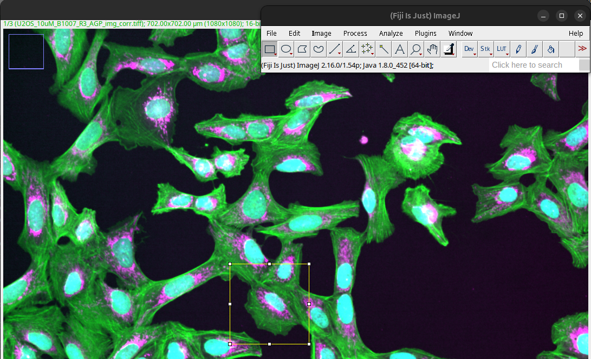
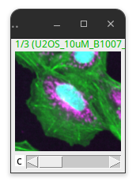
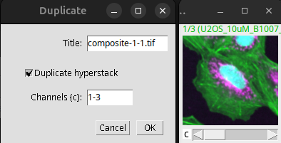
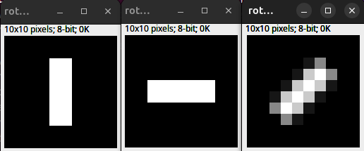
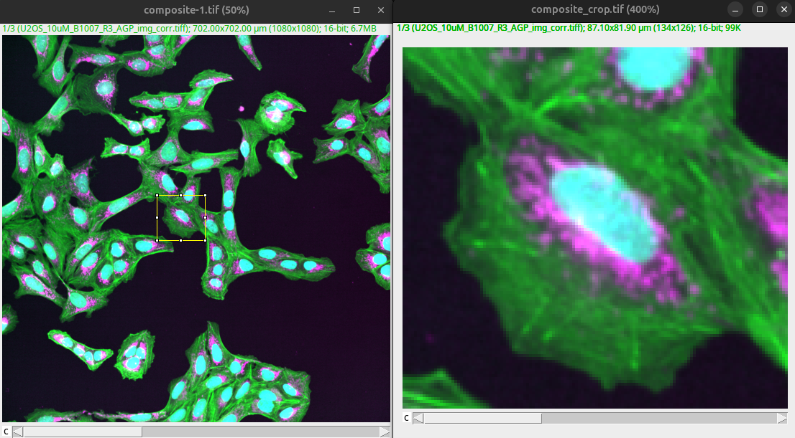
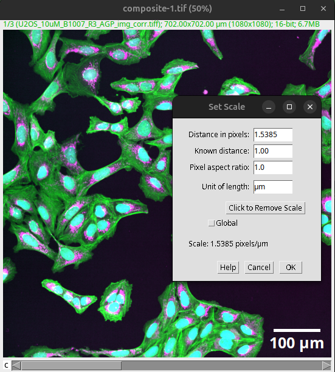
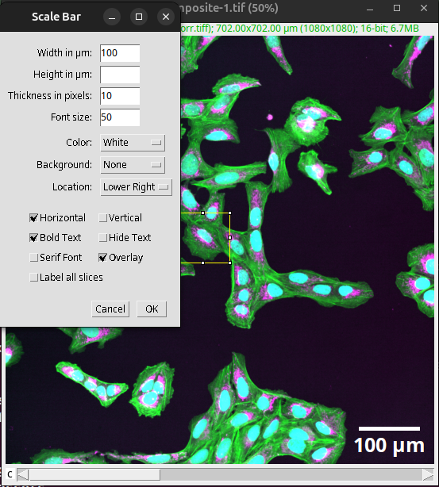
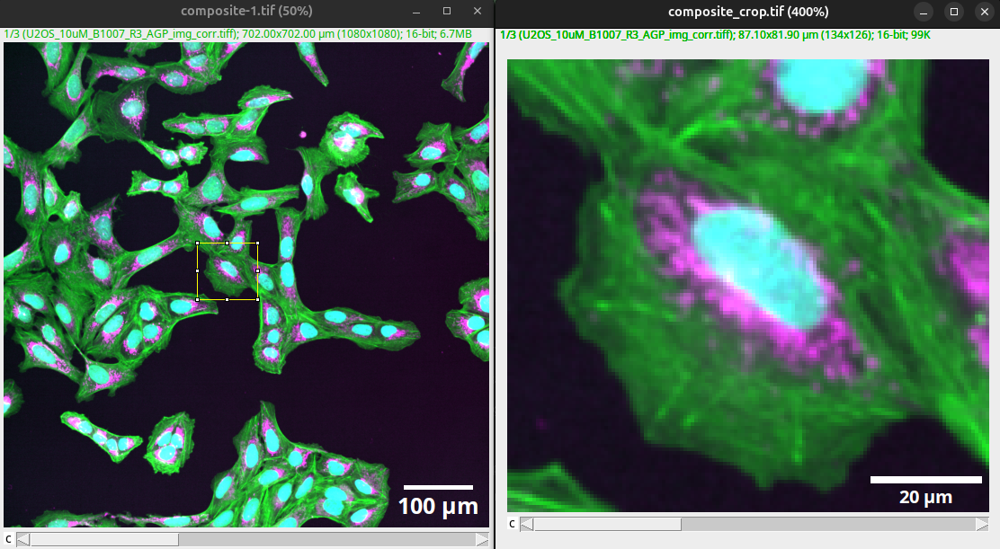
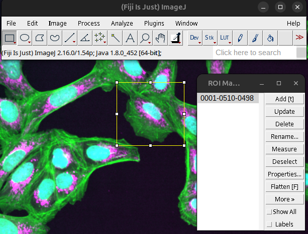
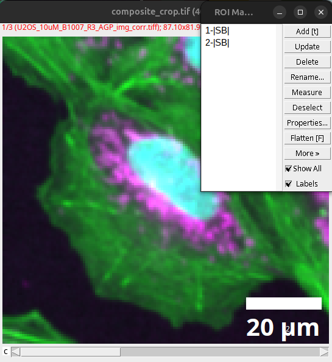

Unit 2: Format and annotations#
Topics: Crop, rotate, scale-bar
Motivation#
Scientific image figures communicate scientific results in a qualitative manner. Therefore, it is important that the result is readily apparent in the image figure without distorting or degrading the information.
Additionally, scientific images capture real world objects that have a physical dimension. These dimensions can cover different magnitudes of scales depending on the imaging modality, e.g., electron microscopy or light microscopy. At a minimum, this physical dimension needs to be communicated using scale bars.
Key considerations#
Is the communicated result readily apparent?
Are key annotations, e.g., scale bar, present?
Introduction#
We start with the result of Unit 1: Visibility, the composite image with adjusted colors, brightness, and contrast. You can download the image here: composite.tif.
Open Fiji.
Then open the image in Fiji:
File > Open… (or drag and drop image into Fiji task bar)

Fig. 29 Composite image.#
The image shows a field of view of many cells. It gives the viewer a good overview and might be an appropriate figure panel if the number of cells, cell density, or the overall look of the cellular neighborhood is the actual result. However, if the result is, for instance, the size or distribution of a specific cellular compartment (e.g., Mitochondria in the magenta channel), this overview alone will be insufficient.
Further, the image is missing key annotations. The cells shown are physical objects that have dimensions that can be expressed in specific units. This is not readily apparent to the viewer with the image alone, particularly if the image figure also shows enlarged views or other images that show results of other imaging modalities (e.g., electron microscopy, light microscopy). Finally, other critical information is also not readily apparent to the viewer, for instance, what cell line is shown (U2-OS) or what the colors mean (Green = Cytoskeleton, Magenta = Mitochondria, Cyan = Nucleus).
To clearly communicate the result, the image needs to be further processed and annotated with key labels (scale bar at a minimum).
Tip
Work on a copy of the image: Image > Duplicate… (Ctrl + Shift + D)
Format#
Let’s assume our result is discussing the size and distribution of the mitochondria. For this, we want to focus the viewer on key image content using cropping. First, identify a representative object in your image.
Important
The selection of the object in the image that should be cropped is as important as the selection of the overview, since the chosen crop shapes how the reader perceives the result and an “edge of distribution” example would misrepresent the data. The shown object should be representative. Acceptable methods to choose an image for a figure could be:
Representative image.
Random selection.
Based on analysis (middle of distribution).
Show multiple examples of the range of phenotypes.
Since the selection of the cropped example is so critical, it is best to always show the overview next to the crop with the origin annotated.
Crop#
Draw a region of interest (ROI) by selecting a ROI tool in the Fiji task bar, for instance, using the rectangle.
{kind=link}

Fig. 30 Rectangle ROI drawn on image.#
Tip
You can save the exact ROI on the image as a non-destructive overlay to easily label the origin of the crop. This is done by saving the image with an active ROI as a TIFF image.
File > Save As > Tiff…
The part of the image within the ROI can now be cropped using:
Image > Crop… (Ctrl + Shift + X)
{kind=link}

Fig. 31 Cropped image.#
To create a crop, one can also use the duplicate command:
Image > Duplicate (Ctrl + Shift + D)
{kind=link}

Fig. 32 Cropping via duplication of the content of the ROI.#
Rotate#
Sometimes the visualization in the images also benefits from rotating the objects. This can be achieved by:
Image > Transform > Rotate 90 Degrees…
Image > Transform > Flip…
Important
Rotation by multiples of 90 degrees in Fiji (or other software manipulating image pixels) can preserve data because each pixel maps cleanly to a new pixel position. Any other rotation needs to interpolate pixel values and thus can alter the image information, which is a problem if the image is later used for quantitative analysis. This applies to any pixel-editing software (Photoshop, GIMP, etc.) — a 45-degree rotation is not “safe” just because it was performed outside Fiji.
{kind=link}

Fig. 33 Interpolation and rotation. (Left) 10 x 10 px original. (Middle) 90 Degree rotation. (Right) 45 Degree rotation bilinear interpolation.#
Interpolation is needed since in Fiji, images are processed as Raster graphics (grid of pixels). The effect of raster graphics, image transformation, and interpolation is also discussed here: Raster graphics and interpolation
Annotations#
We now have the overview image as well as the crop that shows the details of one representative cell.
{kind=link}

Fig. 34 Overview and crop show different scale.#
We need to communicate the scale information as well as other important information (e.g., color) to the viewer such that the image becomes interpretable.
Scale Bar#
The scale bar depends on the pixel size. This information is typically deposited in the saved image by the microscope, but it can be wrong. We therefore need to verify it against the acquisition settings.
The correct pixel size can be verified and changed in Fiji via:
Analyze > Set Scale…
{kind=link}

Fig. 35 Verify and set the correct pixel size before creating scale bars.#
After the correct pixel size has been verified, the scale bar can be created in Fiji via:
Analyze > Tools > Scale Bar…
{kind=link}

Fig. 36 Scale bar added to the overview as an overlay.#
Important
Tick the “Overlay” setting. This adds the scale bar to the image as a non-destructive layer.
The width of the scale bar should relate to the actual size of the shown objects (e.g., size of a cell, size of the nucleus).
{kind=link}

Fig. 37 The width of the scale bar should be in relation to the shown object.#
Note
The size of the scale bar can also be specified in the figure legend.
An acceptable alternative to a scale bar is to specify the physical dimension of the entire image. However, just stating the magnification of the detection lens is not sufficient, as the actual pixel size also depends on the objective’s numerical aperture and detector-side factors such as camera pixel size, additional optics, sampling rate, or binning — two images at the same nominal magnification can therefore cover very different physical fields of view (see Image Brightness for more on how numerical aperture and magnification interact).
Further annotations#
Further annotations can be created in Fiji using the following commands:
Image > Annotate > Arrow…
Image > Stacks > Label…
However, we recommend creating such annotations in a dedicated vector graphics program, such as Inkscape. We discuss the creation of the publication-ready image figure here: Unit 3: Figure prep and availability
Result#
You can download the result of Unit 2: Format and annotations here: composite_scale.tif and composite_crop_scale.tif.
Bonus: ROI Manager and overlays#
You can manage multiple ROIs and also annotations via the ROI Manager. Just open the ROI Manager:
Analyze > Tools > ROI Manager…
To add ROIs press Add [t]
Alternatively, pressing “t” on the keyboard will also open the ROI Manager and add the currently active ROI.
{kind=link}

Fig. 38 ROI Manager window.#
Scale bars or annotations that exist as overlays can be added to the ROI Manager via:
Image > Overlay > To ROI Manager
{kind=link}

Fig. 39 Overlay in ROI Manager.#
The ROIs can then be saved as an independent file:
ROI Manager > Deselect (This selects all ROIs)
ROI Manager > More > Save…